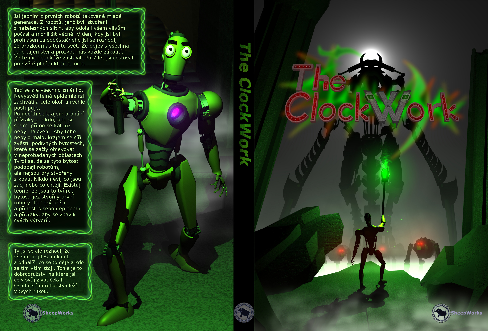
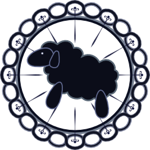
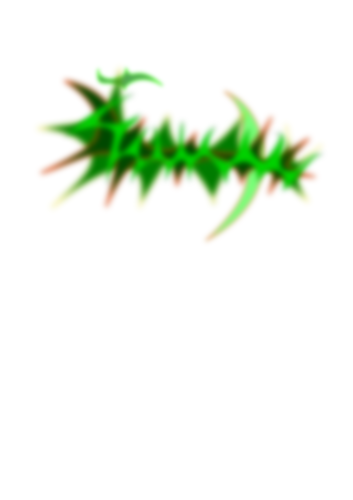
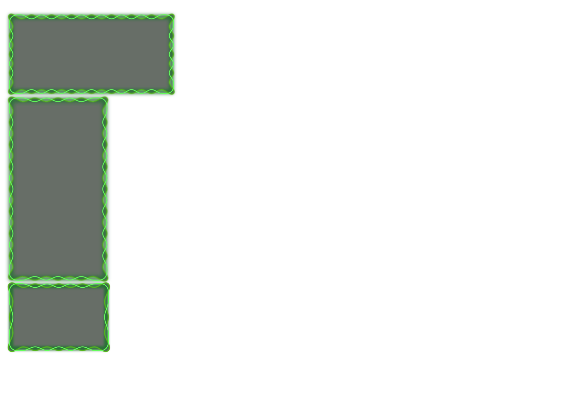
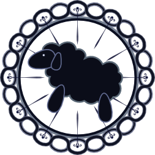
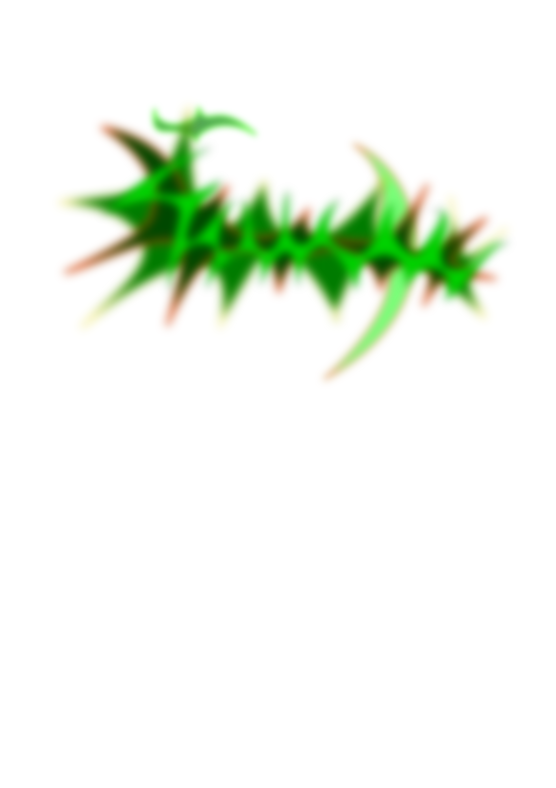
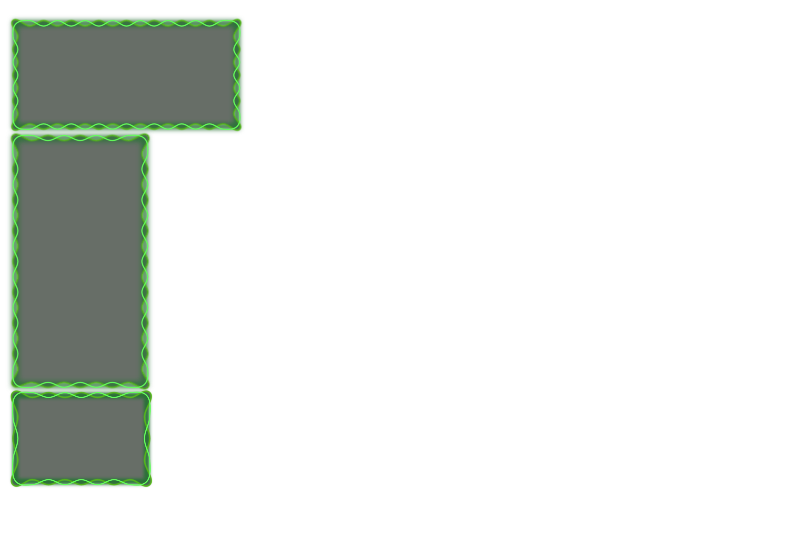

CD cover
Finished in December 2014
Reason to create project:
This project was created for course GRT [1] during my bachelor studies.
Task was to create anything containing several photographies, renders, drawing or paintings. There had to be text (several paragraphs) and some ornament.
About project:
I decided to create CD cover for a game (The Clockwork) we were creating with friends.
I reused several of my older projects (Mechanoid (brass robot) for main character, Arien as silhouette in background and wolves used in The Clockwork ).
Text was very loosely based on The Clockwork story (it is written in Czech language). As ornament I used "shards" (green spiky marks behind "The Clockwork") and my logo ("Sheepworks" logo).
Resources:
All models were created by me in Maya 2014(or reused from my older projects) and rendered by Mental Ray.
"Shards", "Sheepworks" logo and text frames were created in Inkscape.
Final composition was done in GIMP.
[1] GRT (Grafická tvorba - Graphical design)
Renders:

Resources:

 




